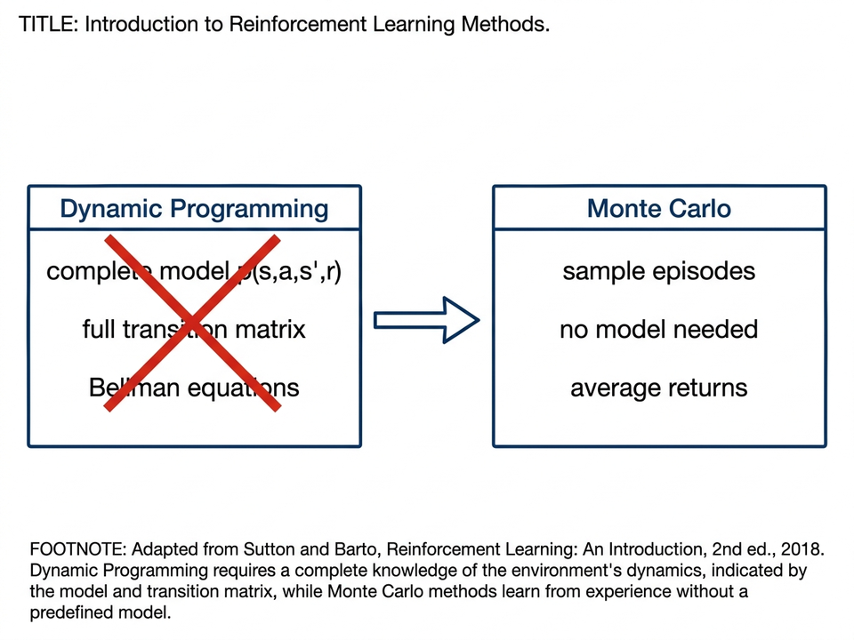
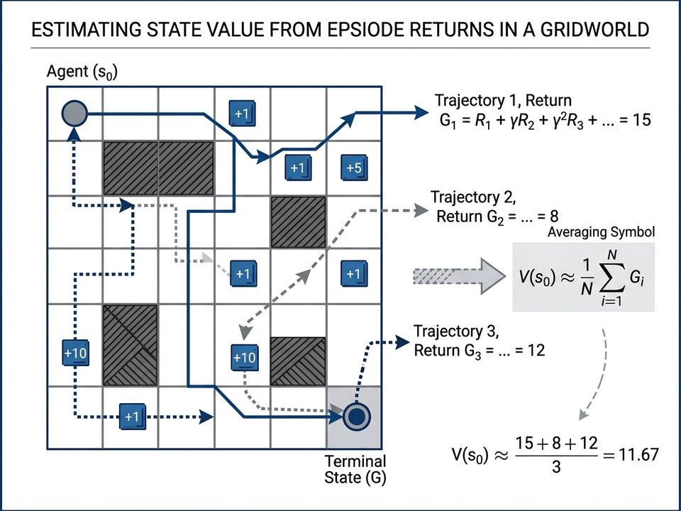
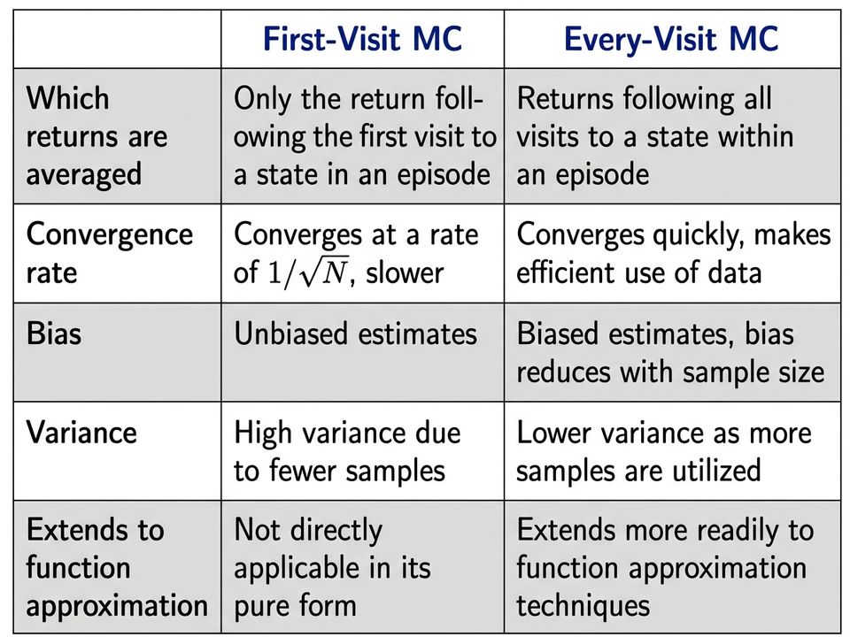
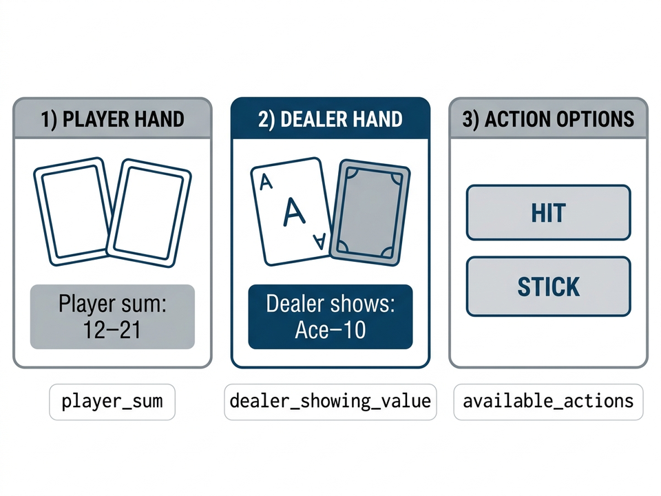
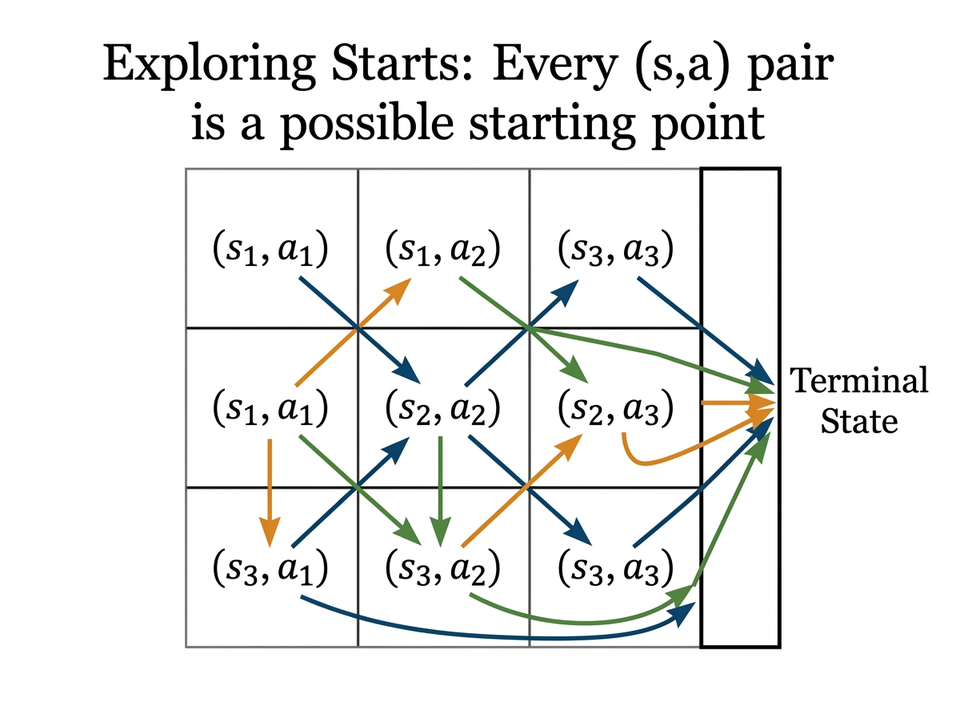
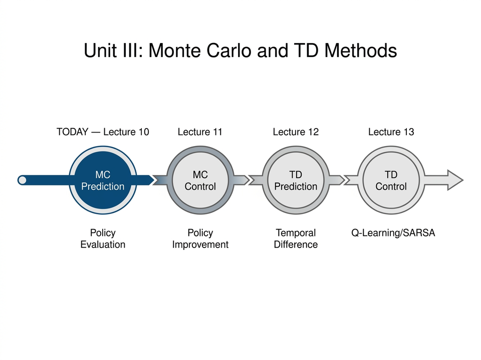

Today's Lecture
- Part A — Why do we need Model-Free methods?
- Part B — Monte Carlo Prediction: the core algorithm
- Part C — Blackjack: a worked example
- Part D — Properties of Monte Carlo methods
- Part E — Estimating Action Values & Exploration
Acknowledgements
These slides are based on:
- Sutton & Barto — Reinforcement Learning: An Introduction (2nd ed.), Ch. 5.1–5.2
- Singh & Sutton (1996) — convergence results for every-visit MC
Part A — Why Do We Need Model-Free Methods?
Recap: The Problem with Dynamic Programming
- In Unit II, DP found optimal policies using Bellman equations
- DP needs the full transition model \(p(s',r \mid s,a)\) — i.e. exact probabilities for every outcome
- In most real problems, this model is unknown or too large to store
- Today: learn value functions from experience, without knowing the model

Monte Carlo: The Core Idea
\[ V(s) \approx \text{average of returns } G_t \text{ observed from } s \]
- Run many episodes; record the total reward (return) from each visit to state \(s\)
- Average those returns → estimate of \(v_\pi(s)\)
- No model needed — just experience
- Only works for episodic tasks (must reach a terminal state)

Prediction vs Control
- Prediction: given a fixed policy \(\pi\), estimate how good each state is — find \(v_\pi(s)\)
- Control: find the best policy \(\pi^*\) that gives the most reward
- Today we study prediction — how to evaluate a policy from samples
- Control (using MC to improve a policy) is covered in the next lecture

GPI: Evaluate ↔ Improve
Part B — Monte Carlo Prediction Algorithm
First-Visit MC Prediction — Algorithm
Input: policy π
Initialize: V(s) ← 0, Returns(s) ← [ ] for all states s
Loop (for each episode):
Play episode following π → S₀,A₀,R₁, S₁,A₁,R₂, …, S_T
G ← 0
For t = T-1, T-2, …, 0:
G ← γG + R_{t+1}
If S_t appears for the FIRST TIME in this episode:
Append G to Returns(S_t)
V(S_t) ← mean( Returns(S_t) )
- Only the return from the first visit to each state is used per episode
- More episodes → more accurate estimate of \(v_\pi(s)\)
First-Visit vs Every-Visit MC
- First-visit MC: use only the return from the first visit to \(s\) in each episode
- Every-visit MC: use returns from all visits to \(s\) — remove the "first time" check
- Both methods give correct estimates as episodes → ∞
- Every-visit is simpler to code and works better with function approximation

Efficient Update: Incremental Average
Instead of storing all returns and re-computing the mean:
\[ V(s) \leftarrow V(s) + \frac{1}{n}\bigl[G - V(s)\bigr] \]
\[ V(s) \leftarrow V(s) + \frac{1}{n}\bigl[G - V(s)\bigr] \]
- Same result as computing the mean from scratch — but uses \(O(1)\) memory
- For non-stationary tasks: replace \(\tfrac{1}{n}\) with a fixed step-size \(\alpha\): \(V(s) \leftarrow V(s) + \alpha[G - V(s)]\)
- This same idea is used in TD learning (next lecture)
🖊️ Board: Show how the incremental mean formula is derived from the running average identity.
Part C — Blackjack: A Monte Carlo Case Study
Blackjack as a Reinforcement Learning Problem
- Goal: get cards summing to ≤ 21, closer to 21 than the dealer
- Actions: Hit (draw a card) or Stick (stop)
- Reward: +1 win, −1 lose, 0 draw — only at end of game
- Simulating games is easy; computing exact probabilities is hard → perfect for MC

Part D — Properties of Monte Carlo Methods
MC Does Not Bootstrap
DP update (bootstraps)
\[ V(S_t) \leftarrow V(S_t) + \alpha\bigl[R_{t+1} + \gamma\,\textcolor{red}{V(S_{t+1})} - V(S_t)\bigr] \]
Uses the estimated value of the next state
MC update (no bootstrap)
\[ V(S_t) \leftarrow V(S_t) + \alpha\bigl[\textcolor{green}{G_t} - V(S_t)\bigr] \]
Uses the actual observed return
- Bootstrapping = using your own (possibly wrong) estimates to update other estimates
- MC never bootstraps — each state's estimate is based purely on real rewards
Part E — Estimating Action Values & Exploration
Why We Need Action Values \(Q(s,a)\)
With a model
\(\pi'(s) = \arg\max_a \sum_{s',r} p(s',r|s,a)[r + \gamma V(s')]\)
Needs \(p\) — not available
Needs \(p\) — not available
Without a model
\(\pi'(s) = \arg\max_a\, Q(s,a)\)
Only needs \(Q\) — model-free ✓
Only needs \(Q\) — model-free ✓
- State values alone are not enough when the model is unknown
- Estimating \(Q(s,a)\) directly lets us improve the policy without any model
How to Estimate \(Q(s,a)\) with MC
Change Returns(s) → Returns(s, a)
Change V(S_t) → Q(S_t, A_t)
Check: is (S_t, A_t) the first visit to this pair in this episode?
Update: Q(S_t, A_t) ← mean( Returns(S_t, A_t) )
- A visit to \((s,a)\): any timestep where \(S_t=s\) and \(A_t=a\)
- Return \(G_t\) is associated with the pair \((s,a)\), not just the state \(s\)
- Everything else is the same as MC prediction for \(V(s)\)
Solution 1: Exploring Starts
- Start each episode from a randomly chosen state-action pair \((s,a)\)
- Every pair must have a non-zero chance of being chosen as the start
- Over many episodes, all pairs will be visited and estimated
- Limitation: only works in simulation — in real settings we cannot control the starting state

Solution 2: Soft (Exploratory) Policies
\(\varepsilon\)-greedy policy: pick the best action most of the time,
but with small probability \(\varepsilon\) pick a random action instead
but with small probability \(\varepsilon\) pick a random action instead
- Every action always has some probability of being chosen → all \((s,a)\) pairs eventually visited
- No special starting conditions needed — works in real environments too
- Tradeoff: finds the best exploratory policy, not the true optimal
- Next lecture: on-policy and off-policy MC control using \(\varepsilon\)-greedy
General Policy Iteration with Monte Carlo
\[\pi_0 \xrightarrow{E} q_{\pi_0} \xrightarrow{I} \pi_1 \xrightarrow{E} q_{\pi_1} \xrightarrow{I} \cdots \to \pi_*\]
- E step: run episodes, average returns → estimate \(Q\) for current policy
- I step: update policy to be greedy w.r.t. \(Q\): \(\pi(s) \leftarrow \arg\max_a Q(s,a)\)
- Alternate E and I after each episode — same GPI loop as in DP
- Converges to optimal policy when all state-action pairs are explored
Summary & What Comes Next
- MC estimates value by averaging returns from sample episodes — no model needed
- First-visit and every-visit MC both converge; no bootstrapping
- Estimate \(Q(s,a)\) for model-free control; need exploration to cover all pairs
- Next lecture: MC Control — Monte Carlo ES, on-policy \(\varepsilon\)-soft, off-policy (importance sampling)

Practice Questions
Q1 — Compute a Return
Question
An episode has rewards \(R_1=2,\ R_2=3,\ R_3=0\) then terminates. Discount \(\gamma = 0.9\).What is \(G_0\), the return from step 0?
A. 4.7 B. 5.0 C. 2.7 D. 3.0
↓ Press down for answer
Q1 — Compute a Return
Question
An episode has rewards \(R_1=2,\ R_2=3,\ R_3=0\) then terminates. Discount \(\gamma = 0.9\).What is \(G_0\), the return from step 0?
A. 4.7 B. 5.0 C. 2.7 D. 3.0
Answer: A — 4.7
\(G_2 = 0\), \(G_1 = 3 + 0.9\times0 = 3\), \(G_0 = 2 + 0.9\times3 = 4.7\)
\(G_2 = 0\), \(G_1 = 3 + 0.9\times0 = 3\), \(G_0 = 2 + 0.9\times3 = 4.7\)
Q2 — First-Visit vs Every-Visit
Question
State \(s\) is visited at \(t=1,4,7\) in one episode with returns \(G_1=5,\ G_4=3,\ G_7=1\).What does first-visit MC estimate for \(V(s)\)?
A. 3 B. 5 C. 4 D. 1
↓ Press down for answer
Q2 — First-Visit vs Every-Visit
Question
State \(s\) is visited at \(t=1,4,7\) in one episode with returns \(G_1=5,\ G_4=3,\ G_7=1\).What does first-visit MC estimate for \(V(s)\)?
A. 3 B. 5 C. 4 D. 1
Answer: B — 5
First-visit MC uses only the return from the first visit: \(G_1 = 5\).
First-visit MC uses only the return from the first visit: \(G_1 = 5\).
Q3 — Blackjack Exploration
Question
Policy \(\pi\): always hit when player sum = 15. Why can't we estimate \(Q(15,\ \text{stick})\)?
A. Blackjack has too many states to track
B. The policy never chooses "stick" at sum=15, so no returns are observed
C. The dealer's card is unknown
D. MC requires a model to estimate action-values
B. The policy never chooses "stick" at sum=15, so no returns are observed
C. The dealer's card is unknown
D. MC requires a model to estimate action-values
↓ Press down for answer
Q3 — Blackjack Exploration
Question
Policy \(\pi\): always hit when player sum = 15. Why can't we estimate \(Q(15,\ \text{stick})\)?
A. Blackjack has too many states to track
B. The policy never chooses "stick" at sum=15, so no returns are observed
C. The dealer's card is unknown
D. MC requires a model to estimate action-values
B. The policy never chooses "stick" at sum=15, so no returns are observed
C. The dealer's card is unknown
D. MC requires a model to estimate action-values
Answer: B
\(\pi\) always hits at sum=15 → "stick" is never taken → no data to average.
\(\pi\) always hits at sum=15 → "stick" is never taken → no data to average.
Q4 — MC vs DP Properties
Question
Which statement correctly describes Monte Carlo prediction?
A. MC needs the full transition model \(p(s',r|s,a)\)
B. MC updates \(V(s)\) using estimated values of successor states
C. MC averages actual returns from complete episodes — no model needed
D. MC backup considers all possible next states like DP
B. MC updates \(V(s)\) using estimated values of successor states
C. MC averages actual returns from complete episodes — no model needed
D. MC backup considers all possible next states like DP
↓ Press down for answer
Q4 — MC vs DP Properties
Question
Which statement correctly describes Monte Carlo prediction?
A. MC needs the full transition model \(p(s',r|s,a)\)
B. MC updates \(V(s)\) using estimated values of successor states
C. MC averages actual returns from complete episodes — no model needed
D. MC backup considers all possible next states like DP
B. MC updates \(V(s)\) using estimated values of successor states
C. MC averages actual returns from complete episodes — no model needed
D. MC backup considers all possible next states like DP
Answer: C
MC uses real sampled returns \(G_t\); no model, no bootstrapping.
MC uses real sampled returns \(G_t\); no model, no bootstrapping.
Q5 — Focused Evaluation
Question
You have a 1000-state gridworld but only need values for 10 states near the goal. Which is more efficient?
A. DP — it converges faster per sweep
B. MC — episodes can start from just those 10 states, skipping the rest
C. Both are equally efficient regardless of target states
D. DP — it does not require full episodes
B. MC — episodes can start from just those 10 states, skipping the rest
C. Both are equally efficient regardless of target states
D. DP — it does not require full episodes
↓ Press down for answer
Q5 — Focused Evaluation
Question
You have a 1000-state gridworld but only need values for 10 states near the goal. Which is more efficient?
A. DP — it converges faster per sweep
B. MC — episodes can start from just those 10 states, skipping the rest
C. Both are equally efficient regardless of target states
D. DP — it does not require full episodes
B. MC — episodes can start from just those 10 states, skipping the rest
C. Both are equally efficient regardless of target states
D. DP — it does not require full episodes
Answer: B
DP sweeps all 1000 states every iteration; MC targets only the states you care about.
DP sweeps all 1000 states every iteration; MC targets only the states you care about.
References
- Sutton & Barto (2018). Reinforcement Learning: An Introduction, 2nd ed., Ch. 5.1–5.2.
- Singh & Sutton (1996). Reinforcement learning with replacing eligibility traces. Machine Learning 22(1–3).
- Kakutani (1945). Two-dimensional Brownian motion and harmonic functions.